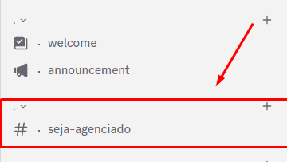
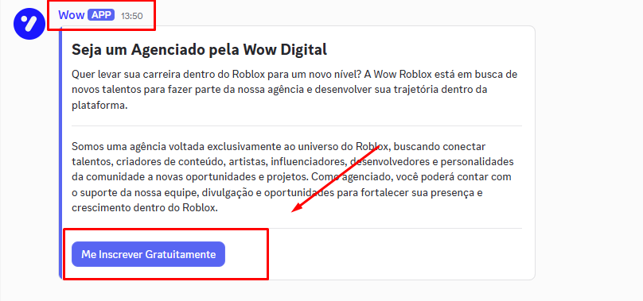
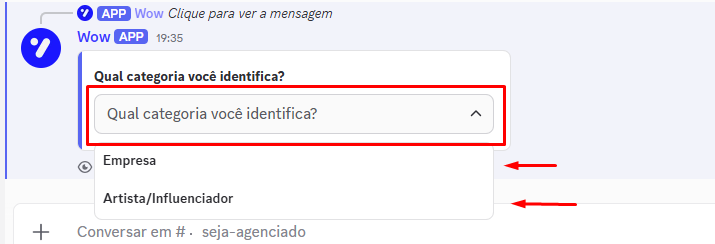
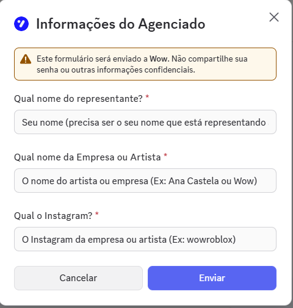
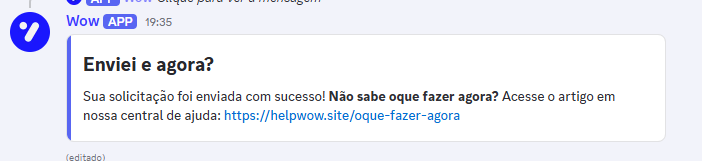

1
Entre no Discord e acesse o canal de inscrição
Entre no nosso servidor e vá até o canal específico de inscrição de agenciados.

2
Verifique se as vagas estão abertas
Botão disponível = vagas abertasVeja se tem uma mensagem com botão disponível no canal. Se tiver, as vagas estão abertas — clique em Me Inscrever Gratuitamente.

Se não aparecer nenhuma mensagem com botão, as vagas estão fechadas no momento. Fique de olho no canal para a próxima abertura.
3
Selecione a categoria
Ao clicar, escolha a categoria com a qual você se identifica: empresa, artista ou influenciador(a).

4
Preencha o formulário
Preencha o nome do representante, o nome da empresa ou artista e o Instagram.

5
Enviado! E agora?
Se depois de enviar você não souber o que fazer, acesse helwow.site/oque-fazer-agora e deixe sua DM aberta.

Precisa ainda de ajuda?
Abra um ticket de atendimento ou veja o vídeo do YouTube do Miguel clicando abaixo.
Ver tutorialEsse artigo te ajudou?